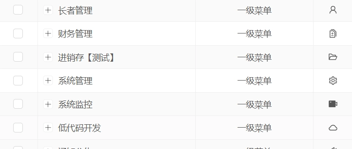
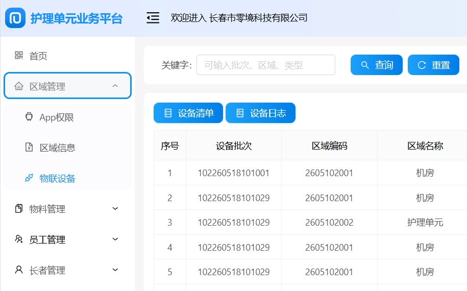

环境搭建
护理单元
最后编辑：liushasha 于 2025-09-04 13:31:10
浏览量：133105
本篇目录
一、全流程一体化管控
1. 覆盖老人从咨询预约、试住、正式入住、日常护理、健康监测到退住全生命周期管理，业务流程闭环无漏洞。
2. 整合健康档案、慢病管理、日常体检、用药提醒、紧急呼叫、巡诊记录，适配医养结合运营模式。
3.后台操作界面简洁直观，无需专业技术人员，行政、护理、财务人员快速上手使用，适配中老年办公群体。二、数据可视化智能分析
1. 自动生成入住率、床位使用率、护理工作量、营收收支、老人健康数据等统计报表，助力管理者精准决策。
三、产品价值
管理层面：规范院内管理制度，简化办公流程，减少人工统计工作量，提升整体运营效率。
服务层面：精准匹配老人照料需求，细化护理服务，完善健康保障，提升老人居住体验。
经营层面：精准把控床位营收、成本支出，提升床位利用率，助力机构规范化盈利经营。
口碑层面：透明化服务管理，便捷家属沟通，树立专业正规养老服务品牌形象。
自动统计床位入住率、员工考勤、老人健康数据、经营收支等数据，直观数据分析，助力管理者科学运营决策。 老人照护精细化

多角色分权分配，院长、护理、医护、财务、后勤权限独立，保护老人隐私与机构数据安全，各司其职互不干扰。
自动统计床位入住率、员工考勤、老人健康数据、经营收支等数据，直观数据分析，助力管理者科学运营决策。
集成健康监测、慢病管理、巡诊记录、应急呼叫对接，完美适配医养结合养老院运营需求。
支持管理后台、护理移动端、家属小程序联动，院内办公、一线服务、家属查询沟通实时同步。养老院运营需求。
